brand design
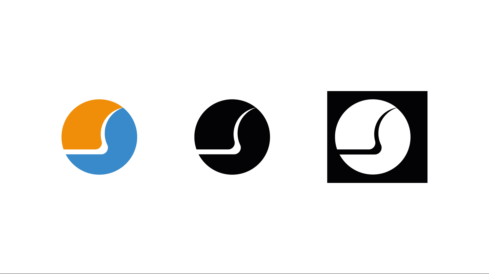
branding project
Developed Sunnee’s visual identity: logo, color palette, typography, icon set, social assets, and brand guidelines.
download presentation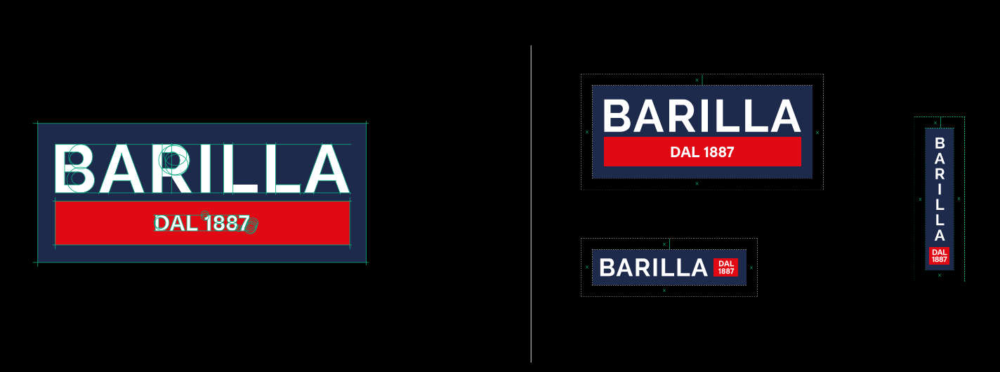
barilla rebrand: visual identity & ux redesign
Rebranded Barilla and redesigned the website experience: discovery, wireframes, interactive prototype, and usability testing to validate choices.
download presentation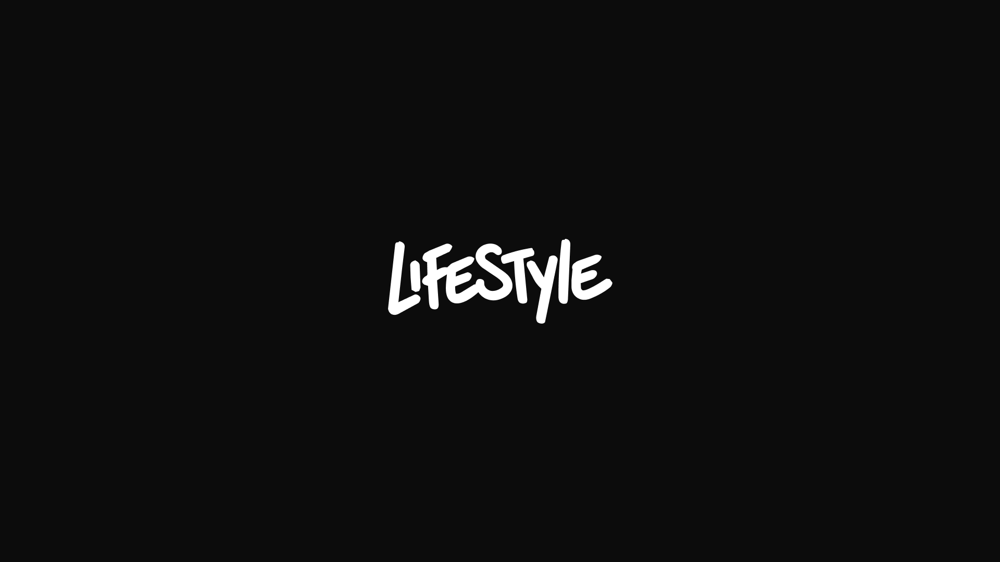
lifestyle archive
Built an editorial brand and a reusable social system for culture content, from art direction to layout templates and content design.
download presentation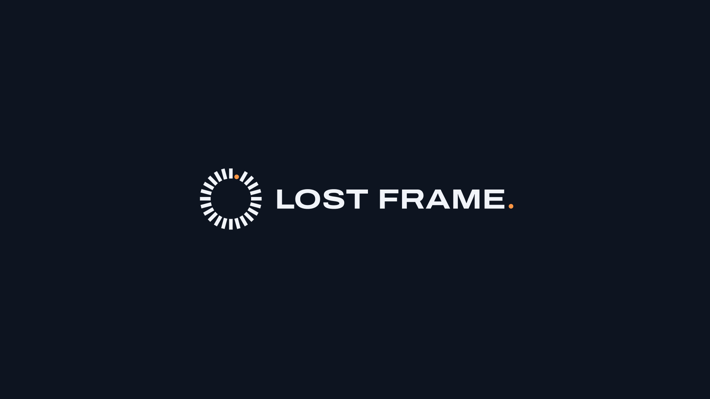
lost frame
Designed a cinematic visual system (palette, type, components) and applied it to key UI screens and reusable social templates.
download presentationux research & accessibility
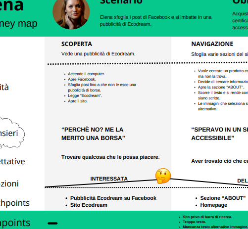
accessibility pt 1
Accessibility audit on an e-commerce: identified key barriers and proposed layout, navigation, and content improvements.
download presentation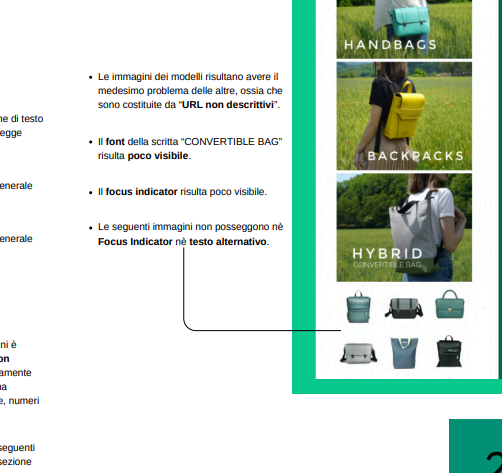
accessibility pt 2
Persona + journey-based analysis with actionable fixes for contrast, structure, and navigation to improve inclusivity.
download presentation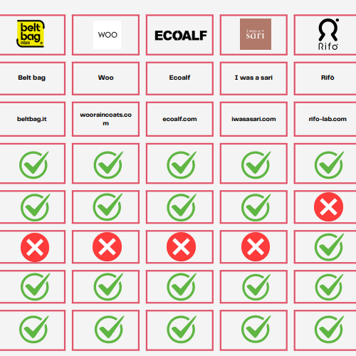
discovery pt 1
Heuristic evaluation + competitor benchmarking to spot usability/accessibility gaps and translate insights into recommendations.
download presentation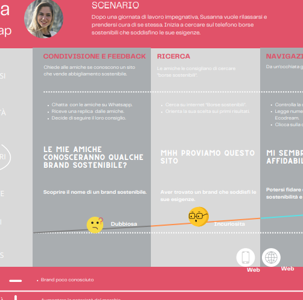
discovery pt 2
Deepened the analysis with personas/journeys and proposed clearer CTAs, simplified content, wishlist and live chat features.
download presentation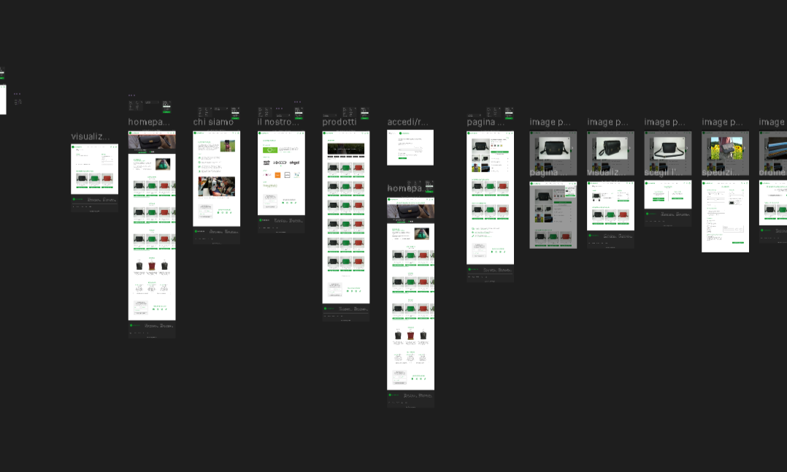
user test 1
Planned a remote moderated First Click Test: goals, target users, prototype, and script to evaluate initial interactions.
download presentation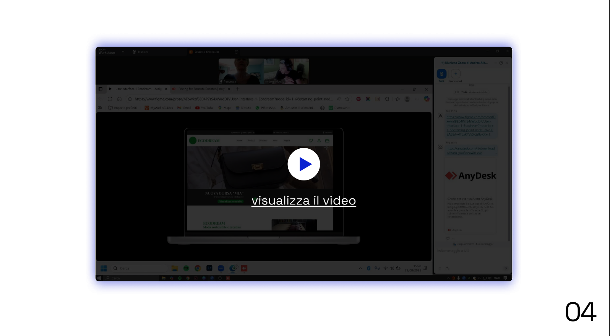
user test pt 2
Analyzed remote sessions, captured usability issues and first-click patterns, and turned insights into prioritized improvements.
download presentationux/ui design
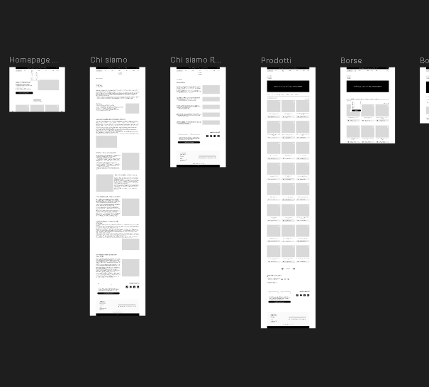
wireframing pt 1
Created desktop wireframes and wireflow to improve information architecture, discoverability, and key shopping interactions.
download presentation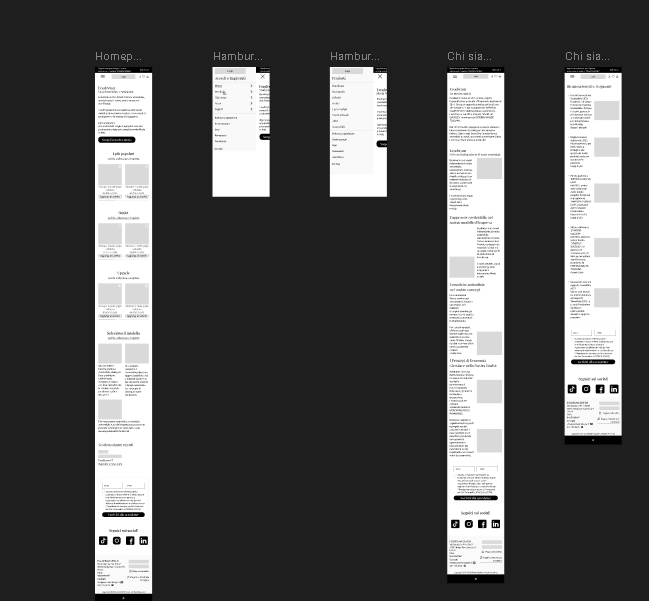
wireframing pt 2
Adapted the experience for mobile: responsive layouts, refined typography, better spacing, and optimized touch targets.
download presentation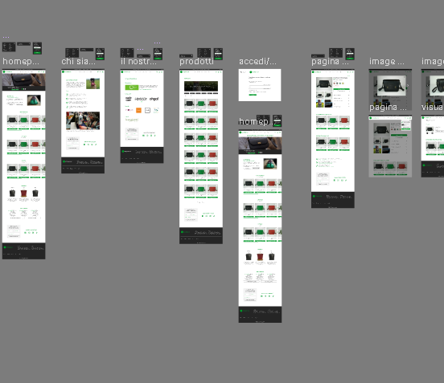
user interface pt 1
Designed high-fidelity desktop UI, translating wireframes into accessible layouts and consistent UI components.
download presentation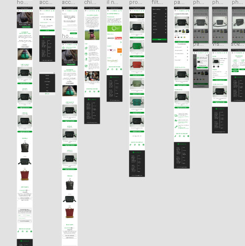
user interface pt 2
Designed the mobile UI, ensuring cross-device consistency and improving readability, spacing, and interaction states.
download presentationweb development
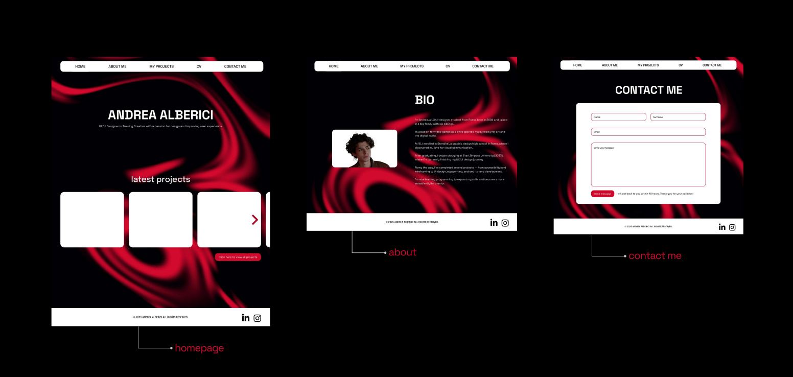
html and css project
Designed and built my portfolio from a Figma layout using HTML, SCSS/Bootstrap, and JavaScript with a responsive, modular structure.
download presentationcopywriting
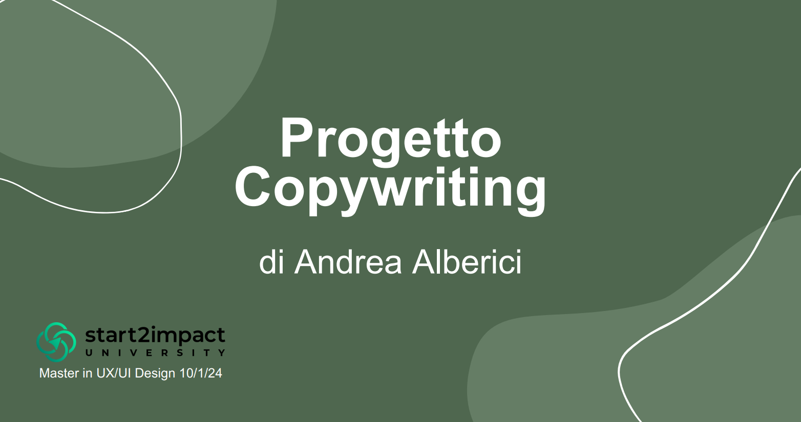
copywriting project
Wrote conversion-focused copy for a sustainable fashion brand, combining audience analysis, storytelling, and persuasion principles.
download presentationgraphic design

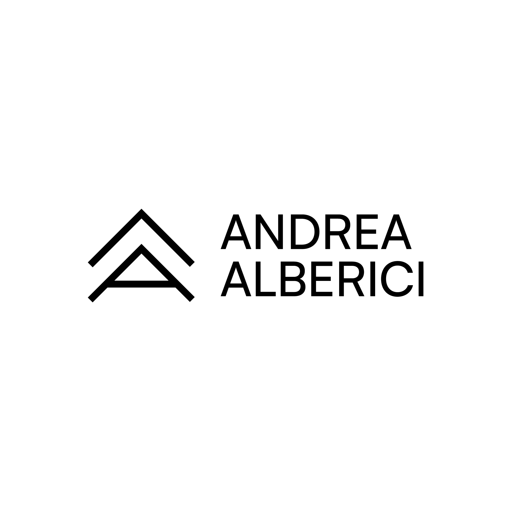


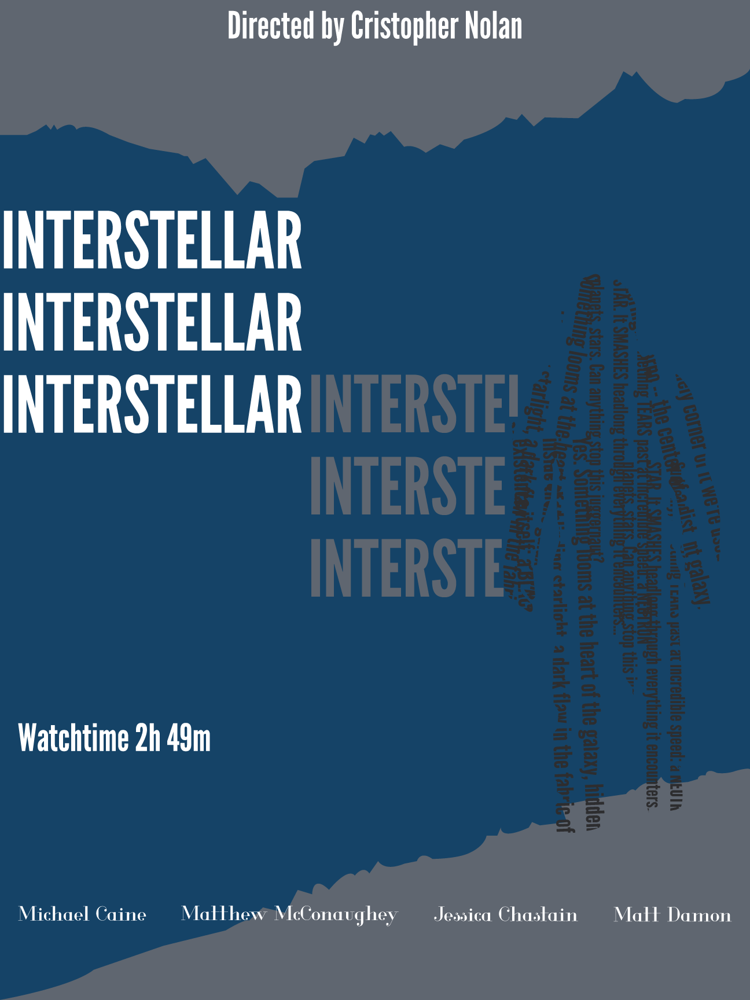

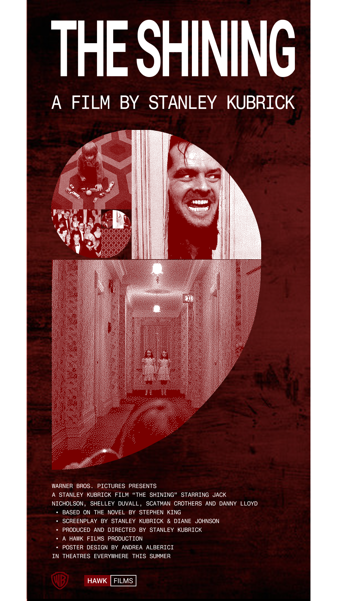